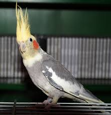
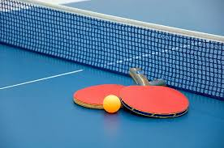
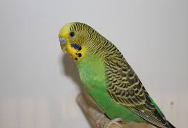

Bemutatkozás
Név:Sztrigán Vivien
Kor:16
Neme:Nő
Iskolái:
- Kőrösi Csoma Sándor Általános Iskola
- Újbudai Széchenyi István Gimnázium
- BMSZC Neumann János Számítástechnikai Szakgimnázium
Sztrigán Vivien vagyok a BMSZC Neumann János Számítástechnikai Szakgimnázium 9.C osztályába járok, ahol média tagozaton végzem tanulmányaimat.
16 éves vagyok az Újbudai Szécheny István Gimnázium angol nyelvi előkészítőjéről jöttem át.
Érden lakok a szüleimmel nincsenek testvéreim, de van két papagájom név szerint Tiki és Süti.
Süti


Tiki

Kedvenc tantárgyam a Matematika.
Legjobban utált tantárgyam a komplex természettudomány.Hobbijaim a körömfestés az asztaliteniszezés és a rajzolás.
Főzni is tudok és ha anyukám nem ér rá én végzem a házi munkát.
Versenyeredményeim:
- sport exo rajzpályázat III.helyezés
- ünnep a családban rajzpályázat III.helyezés
- Bibliai történetek rajzpályázat III.helyezés
- Helyesírási verseny IV.helyezés
- Szépolvasás verseny II.helyezés
- Zrínyi Ilona matek verseny
- Geller Dávid matek verseny IV.helyezés
- Geller Dávid matek verseny III.helyezés
- Körzeti asztalitenisz bajnokság I.helyezés
- Megyei asztalitenisz bajnokság V.helyezés
- Középiskolai asztalitenisz bajnokság I.helyezés
Mostanában játszott játékaim
- Albion online
- League of Legends
- Fortnite
- Osu
- Devil May Cry
Források:
kép SütirőlKép Tikiről
Asztalitenisz
Matematika